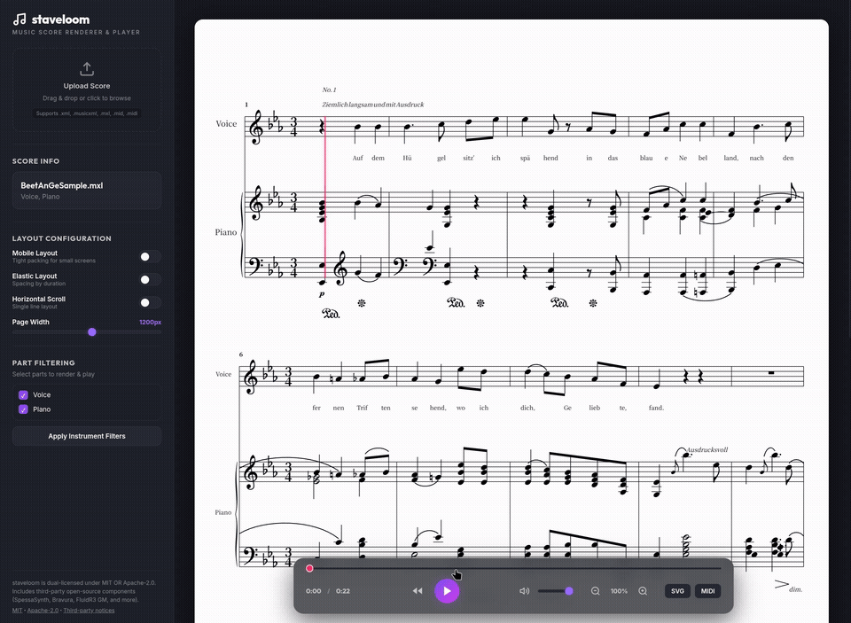

A MusicXML parsing and SVG rendering engine written in Rust — shipped as a CLI tool and a browser-based interactive web player.
The web player is fully client-side: rendering (WASM), MIDI synthesis (SpessaSynth), and playback all happen in the browser — no server required.

Broad MusicXML 3.1/4.0 support, tolerant of the quirky structures exported by various notation software.
Compact by default, Elastic for duration-based spacing, and Mobile for dense packing — auto-detected on narrow screens.
Beams, slurs/ties, guitar tab & bends, tuplets, ornaments, and collision-free dynamics/lyrics/chord placement.
CLI-side rendering with trills, mordents, arpeggios, and tremolos expanded into real note sequences.
Resolves repeats, volta endings, D.S./D.C., Segno/Coda into precise timing for a score-follow cursor.
Drag-and-drop MusicXML or MIDI, real-time SF2 synthesis, virtualized rendering for large scores, and an installable offline-capable PWA.